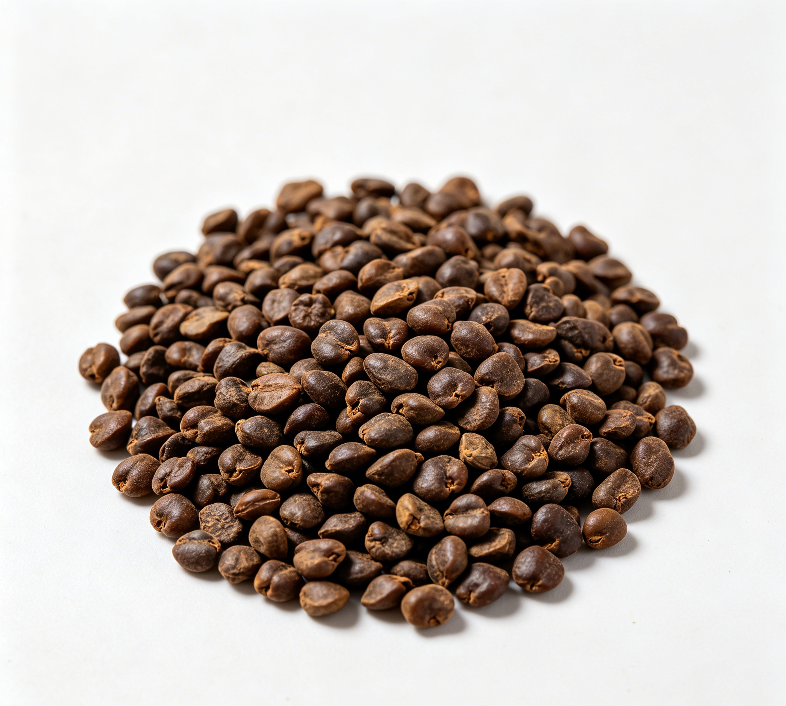

📋 基本信息
中文名枳椇子
拉丁名Seed of Japanese
英文名Semen Hoveniae
产地科属划分：植物界被子植物门双子叶植物纲，鼠李科Rhamnaceae，枳椇属Hovenia；药材基原为枳椇Hovenia dulcis Thunb.（地方标准亦收载Hovenia acerba Lindl.）。主产地：主产于陕西（渭南、紫阳、镇坪、旬阳）、湖北（恩施、孝感）、浙江（金华、兰溪）、江苏（扬州、苏州）、安徽（安庆、六安）、福建（厦门、泉州），江西、湖南、河南、四川、广东、广西、贵州等地亦有分布，多栽培。
性状本品呈扁圆形，直径3～5.5mm，厚1.5～2.5mm。表面棕红色、棕黑色或绿棕色，有光泽，平滑或可见散在的小凹点，顶端有微凸的合点，基部凹陷处有点状种脐，背面稍隆起，腹面有一条纵行隆起的种脊。种皮坚硬，不易破碎，胚乳乳白色，子叶淡黄色，肥厚，均富油性。气微，味微涩。【卫生部药品标准中药材第一册（1992年版）】
用法用量4.5～9g。【卫生部药品标准中药材第一册（1992年版）】
贮藏置通风干燥处。【卫生部药品标准中药材第一册（1992年版）】
☯ 传统属性
四气平
五味甘
归经心、脾经
功能主治止渴除烦，清湿热，解酒毒。用于酒精中毒，烦渴呕逆，二便不利等症。【卫生部药品标准中药材第一册（1992年版）】
禁忌症脾胃虚寒者慎用；孕妇慎用。本品为药食两用物质，作食品食用时不宜过量。【《中华本草》及食疗文献整理】
毒性常规剂量（4.5～9g）服用安全性较好，未见明显毒性报道；药理实验显示其利尿作用温和、未见明显副作用。偶见过量服用引起轻度胃肠不适、腹泻（性偏凉利）；个别人可能出现过敏反应。长期大量服用的安全性研究资料不足，建议按推荐量使用，出现不适即停用。
适宜体质阴虚质、湿热质
适宜证型阴虚证、肺阴虚证、胃阴虚证、热证
🔬 现代研究
主要成分枳椇子含黄酮类（二氢杨梅素、杨梅素、槲皮素、山柰酚及其苷）、三萜皂苷（枳椇皂苷C、D、G、G'、H，hovenosides）、生物碱（枳椇碱A、hovenine，黑麦草碱perlolyrine，β-咔啉）、多糖、葡萄糖、果糖及有机酸（果柄含苹果酸钙）、钾盐（硝酸钾）等；种仁富含脂肪油。代表性指标成分为二氢杨梅素。其肉质果柄含多量葡萄糖、苹果酸钙。
药理作用已报道的药理活性包括：（1）保肝解酒：枳椇子提取物及二氢杨梅素可加速乙醇代谢、降低血醇浓度，减轻酒精性肝损伤，抑制肝组织脂质过氧化，对化学性肝损伤动物模型有保护作用；（2）中枢抑制与镇静：对中枢神经系统有抑制作用；（3）利尿：对家兔有显著利尿作用；（4）降压、抗脂质过氧化、抗氧化清除自由基；（5）抗疲劳、增强体能及一定的降血糖、抗菌活性报道。以上多为动物与体外实验结果，临床证据尚不充分。
食疗功效传统食疗认为枳椇子味甘性平，能止渴除烦、解酒毒、利大小便，民间常用于醉酒烦渴、呕吐、口渴多饮；其肉质果柄（拐枣）味甜，可直接食用、泡酒或煮水，有润燥生津、补充糖分之效。《本草纲目》载其'止呕逆，解酒毒'，'润五脏，利大小便，功同蜂蜜'。现代营养角度可补充水分、糖分与黄酮类抗氧化物质。属食疗辅助，不能替代解酒药及正规治疗。
食养禁忌
🏭 产品形态与潜在功能
推荐形态
粉末丸剂干果
潜在功能